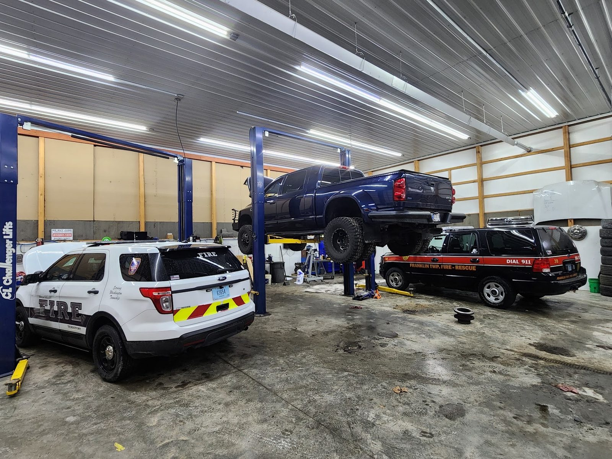

Auto repair · Spencer, IN
Auto repair in Spencer, since 2018
Brakes, tires, engines and diesel in one shop. Quick to fit you in, and we keep you posted.
Elite Automotive INC

JOB ESTIMATE
- Brakes✓
- Alignment✓
- Tires✓
- Engine repair✓
- Oil changes✓
- Diesel✓
- Fleet✓
TOTALWE CALL FIRST
** Free multi-point inspection with every service **
4.4/5 · 78 Google REVIEWS
THANK YOU. COME AGAIN.
Itemised
What we fix
One shop for the whole list.
Elite Auto
SERVICES
- 1
Brake repair
✓Quality parts, a thorough inspection and adjustments so the brakes work the way they should.
- 2
Engine repair, diagnostics and replacement
✓Noises and warning lights diagnosed, then repaired. Engine replacement comes with a warranty.
- 3
Tires and alignment
✓New and used tires, flat repair, rotation and alignment. Rim repairs and quick tire swaps too.
- 4
Oil changes and maintenance
✓Oil and filter, a fluid check and an inspection. Luxury imports are welcome too.
- 5
Transmission service and replacement
✓From fluid changes to complete rebuilds and replacements.
- 6
Diesel, fleet and farm equipment
✓Diesel and semi-truck repair, fleet maintenance, and a mobile crew for agricultural equipment service calls.
TOTALWE CALL FIRST
Customer copies
Signed by customers
4.4 / 5 from 78 Google reviews
CUSTOMER COPY
In 2026 my vehicles all have needed either maintenance or repairs so I have used Elite in Spencer many times this year from new tires, sensors, diagnosis on a creaking noise I couldn't figure out. Every time Jacob and Zach the service writers have been amazing. I love to feel comfortable and talk to them in person and every time I show up they are easy to talk to and always are fair with me and give me updates.
SIGNED: John J.
CUSTOMER COPY
Absolutely amazing customer service! I ended up with a blown out tire and bent rim after being ran off the road. I dropped off the rim and a new tire at closing and was back up and running the next day! They were able to get the rim repaired and tire put on and charged way less than they originally had quoted me! Will 100% be my go to for any work I need done in the future!
SIGNED: Makayla C.
CUSTOMER COPY
This is my go-to mechanic shop. Came here a few times now. They are knowledgeable, kind and listen to you. I even had them check my car for a suspected tracking device, and not once did they look at me weird, or make me feel paranoid. They listened, acknowledged my concerns, and did all they could to make me feel heard and understood. I don't see myself looking for any other mechanic shop anytime soon.
SIGNED: Victoria A.

The shop
Spencer's shop since 2018
Elite Auto has served Owen County and South-Central Indiana since 2018, from 5th Avenue in Spencer.
Jacob and Zach write up your service. Easy to talk to, fair, and good with updates.
The shop also sends a mobile crew to farm equipment and works with Frye Towing & Recovery for 24/7 roadside help. Elite is a U-Haul dealer too.
OUR POLICY
- Free inspection. A multi-point inspection comes with every service.
- Updates. You hear from the shop as the work goes on.
- Quick to fit you in. We work you in fast.
Attached prints
Around the shop


Find us
Stop by
565 5th Ave, Spencer, IN 47460
Open Monday to Friday, closed weekends. Ask about pickup of your vehicle during your workday.
Hours
- Mon
- 8 AM–12 PM, 1–5 PM
- Tue
- 8 AM–12 PM, 1–5 PM
- Wed
- 8 AM–12 PM, 1–5 PM
- Thu
- 8 AM–12 PM, 1–5 PM
- Fri
- 8 AM–12 PM, 1–5 PM
- Sat
- Closed
- Sun
- Closed